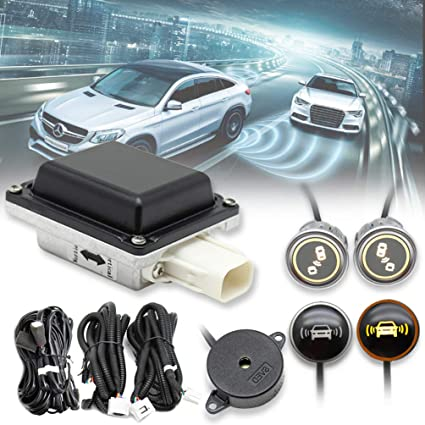

It is a type of warning Drivers get that is an audible and/or visual alert that there’s a vehicle in their blind spot. The system may provide an additional warning if the turn signal is activated when it is unsafe to merge or change lanes.
The system utilizes radar sensors located on the sides of the rear bumper to detect vehicles in adjacent detection zones. In some models, the system utilizes a rear-mounted camera to detect vehicles in adjacent detection zones.
FACTORY-INSTALLED SYSTEMS :
The most common type of blind spot monitoring system is the one automotive manufacturers offer as standard or as an upgrade feature at certain trim levels. While more and more manufacturers are starting to offer
these systems free-of-charge, most continue to reserve them for more expensive vehicles. As a result, they tend to be custom-tailored for the specific model, making few (if any) compatible with older vehicles.
AFTERMARKET SYSTEMS:
Aftermarket blind spot monitoring kits make up a small market, but it continues to grow as more startups and major automotive accessory companies begin to offer custom-designed kits for a variety of cars. Many of these kits are meant to
be near-universal in application, meaning you don't have to worry about the make, model, and age of your vehicle quite as much. With that said, accuracy tends to be less than factory-installed kits, but this varies between different options.
• Increase your driving awareness.
A single pair of eyes can only look at so many things at once. When you have a lot of different things going on around your vehicle, it helps to have as much extra coverage for your senses as possible.
A blind spot monitoring system does just this by consistently viewing the spots you can't always track while driving.
• Increase response time.
Reaction time can be the difference between life and death. In order to respond
to something, you need to actually notice it in the first place. Blind spot sensors tend to be more effective than mirrors alone since they give an active notification of something that is nearby or in the blind spot itself. With mirrors,
you still have to see the reflection in order to react accordingly.
• Make passengers feel safer.
Few people will argue with the opportunity to ride in a car that increases safety however possible. With a blind spot monitoring
system, you can give passengers some extra piece of mind when riding in an older vehicle. Better still, the basic indicators notify everyone in the vehicle, so extra passengers can help you notice important things in tandem with the sensors.
• Help drivers of larger vehicles.
Blind spot detectors help drivers of big vehicles as your blind spots are larger-than-usual. Whether on highways or city streets, you can decrease your stress levels with the ability to monitor large,
unseen areas surrounding your big vehicle.
• Prevents car crashes.
Along with monitoring the areas around your vehicle, blind detection systems can keep you from running into another car, preventing collisions with other vehicles
that are moving in the same direction or an adjoining lane.
• Accuracy.
One thing that varies somewhat with different systems is the accuracy of the sensors. Essentially, accuracy for blind spot detection is how well the sensors
can ignore false triggers (things that don't present a danger) without ignoring anything that needs to be noticed. High-quality sensors tend to offer better accuracy, but keeping false trigger rates down also requires an advanced controller
programmed to differentiate positive and false triggers as much as possible.
For more information please see this video
So for what are you waiting, go ahead and Buy and keep your family safe.